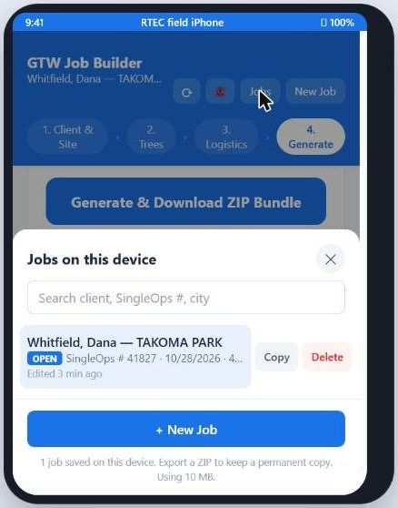

A recorded walkthrough of the GTW Job Builder on a real job, the files it drops on your phone, how they get to OneDrive, and what the office does with them to build the SingleOps proposal.
Everything on this page from Set-up to the OneDrive upload. The job isn't finished until the ZIP is in the folder.
Watches the folder, builds or checks the proposal, owns the tags and custom inputs, runs the quality checks.
Creates the shared OneDrive folder and its permissions, and creates any SingleOps item or item group the catalog is missing.
The Job Builder is an offline worksheet that produces one proposal-ready document set per property. It does not talk to SingleOps. Nothing it makes is an import file — the ZIP is the source document a person reads while typing the proposal. Knowing that is the difference between a report Conor can work straight down, and one he has to interview you about.
Ten minutes, once, on wifi — not in the driveway of your first estimate.
https://wncoakman.github.io/RTEC-GTW-Planner/ in Safari (iPhone/iPad)
or Chrome (Android). The first load caches the whole app and its libraries, which is
what makes it work later with no signal at all.GTW Job Builder Exports folder. If you can't,
that's Melinda.↻ checks for an update
— it saves the open job first, installs, and reloads; an amber dot means one is
waiting. 🐞 opens a pre-filled email to report a problem, with the
device details and recent errors already in it.Recorded on the demo job above. Tap any screen to play it. Four steps across the top of the app, in order, and you can jump back to any of them at any time.
Seven fields, and they key everything downstream: the PDF title banner, the ZIP filename, every photo label and every tree ID.
41827-1, 41827-1a. Leave it blank and the export
falls back to Tree #1 and 1a with no job reference
anywhere, and someone renames seven files at the office.Last, First — couples are
Last, First and First. That's the string Conor matches against the
SingleOps client record.Work in that order and you never have to walk back. Each tree takes as many photos as you want.
Stop & save ends it early if you've got a good
number.
Tap a thumbnail to open it full size, then Edit. Select, Draw, Shapes
(box, ellipse, line, arrow), Text and Magnify, with six colours, a line-width slider
and Undo / Clear / Delete.
41827-1-original.jpg and 41827-1-edited.jpg, so the
annotated copy can go to the client and the clean one stays on file.Every task under a tree is lettered. That label is the same one you'll see on the report line, on the photo filename and on the proposal line it becomes.
41827-2. Use it for the stump grind that happens another day. Don't use
it for work the same crew does the same morning.41827-1b), separate from the
tree's.
Fine-tune opens the aerial. Drag the map until the crosshair sits on the
stem, pinch or scroll to zoom. The dashed ring is where GPS put it; the other numbered
pins are the rest of this property's inventory, so you can see the whole layout as you
work.
This screen is the one the crew actually reads on the day — nearly all of it lands on the 5×7 notecard.
One button for the normal case. The header line is a sanity check on your own arithmetic — four inventory entries, $6,875.00.

Every job you start stays on the phone. Search by client, SingleOps # or city;
Copy duplicates one as a starting point for a similar property;
New Job never discards the one you were on.
One ZIP per property, named for the client and the inspection date. These are the real files from the demo job — click through them.
The document Conor works down while building the proposal. Laid out deliberately in the order SingleOps is entered: client, then every tree and task with hours and price, then equipment, work plan, safety, permits, notes, tags, and the photo pages last.
Every photo filename, every report line and every proposal line share one ID, built from the SingleOps #.
| ID | What it is |
|---|---|
| 41827-1 | Tree #1 — the White Oak |
| 41827-1a | Its first task — clearance pruning |
| 41827-1b | Its second task — deadwood, Recommended |
| 41827-2 | Tree #2 — and, on the notecard, the split return visit |
| M1 / P1 | Multi-tree and plant-health tasks, job-level |
The two PDFs deliberately carry different things.
| Report | Notecard | |
|---|---|---|
| Prices | Every line | Split visits only |
| Man-hours | Every line | First-visit total (21) |
| Photos | All, labelled | None |
| Site map | Yes | No |
| Access & permits | Yes | Yes |
| Audience | Office | Crew |
Do this before you leave the property, or at the latest before the end of the day. A job that only exists on your phone does not exist.
One folder per job, and the folder name carries the SingleOps # because the filenames don't.
RTEC Treecare › GTW Job Builder Exports › 2026 › 41827 Whitfield Dana TAKOMA PARK
GTW Job Builder Exports in the shared RTEC library with the year
subfolder, give the arborists edit and the office read, and make sure it shows up in
everyone's OneDrive app. Until that exists, arborists are emailing 8 MB attachments.
Open the report PDF and work top to bottom. It was built in this order on purpose. Nothing in the ZIP imports — every line is typed, so the goal is to type it once, correctly.
The report's tree blocks map straight onto the standard GTW item groups. Never type a one-off item when a group exists — it breaks the reporting and the work-order layout.
| Report line | SingleOps group | Fill in |
|---|---|---|
| Tree #1 · 1a, 1bWhite Oak 34″, clearance + deadwood | GTW_PRTree Pruning | Tree #, Species, DBH on the tree line; 1b as a Recommended line; GTW Crew 9 MHrs |
| Tree #2 · 2aRed Maple 22″, crown raise | GTW_PR | Tree #, Species, DBH; GTW Crew 4 MHrs |
| Tree #3 · 3aFlowering Pear 16″, full removal | GTW_TDTree Take Down | Tree #, Species, DBH; GTW Crew 8 MHrs; chipper and chip truck as Equipment items |
| Tree #3 · 3b [SPLIT JOB]Stump grinding, another day | GTW_SGStump Grinding | Same proposal, split the visit → 41827-2, own invoice; GTW Crew 2 MHrs; grinder as an Equipment item |
| M1 [RECOMMENDED]Mulching, trees 1 and 2 | — | A Recommended proposal line, not a note |
| P1 [RECOMMENDED]Boxwood targeted application | PHC | Not a line on this proposal. PHC is a separate recurring job — check with Conor whether it's a one-off treatment or an add to an existing program |
| In the report | In SingleOps |
|---|---|
| Client & Site block | Match to the existing client record — search by name, email and phone before creating anything |
| Required Equipment | Equipment items on the relevant groups. Not in the notes. |
| Work Plan & Mobilization | Crew Notes |
| Safety Concerns | Crew Notes, and the site-conditions tag |
| Access & Permits detail | Crew Notes for the crew-facing part; the permit chase is office work |
| Crew / Client / Internal / Scheduling notes | The matching note fields, one for one. All four together under ~1,000 characters. |
| Tags chips | Translate, don't copy. They're equipment and permit text, not RTEC's approved tag list — pick the real S-CREW, S-Property Size, P-Site Conditions and scheduling tags. |
| Report PDF + annotated photos | Attach to the job. The photo filenames already match the line items. |
| GeoJSON / CSV coordinates | Source for the property's inventory map pins. Manual — there's no importer. |
Worth saying plainly, so nobody waits for a sync that isn't coming.
41827-1a photo labels — is
about making that retyping fast and unambiguous, not about avoiding it.